بسم الله الرحمن الرحيم
Sayyid Abul Ala Maududi - Tafhim al-Qur'an - The Meaning of the Qur'an
 38.
Surah Saad
38.
Surah Saad
The Surah takes its name from the alphabetic letter Suad with which it begins.
As will be explained below, according to some traditions this Surah was sent down in the period when the Holy Prophet had started calling the people openly to Islam in Makkah, and this had caused great alarm among the chiefs of the Quraish. If this be true, its period of revelation would be about the 4th year of the Prophethood. According to some other traditions, it was sent down after Hadrat Umar's embracing Islam, and this happened, as is well known, after the migration to Habash. Another chain of the traditions shows that the event which occasioned the revelation of this Surah took place during the last illness of Abu Talib. If this be correct, the period of its revelation would be the 10th or 11th year of the Prophethood.
Here is a resume of the traditions related by Imam Ahmad, Nasa'i, Tirmidhi, Ibn Jarir, Ibn Abi Shaibah, Ibn Abu Hatim, Muhammad bin Ishaq and others:
When Abu Talib fell ill, and the Quraish chiefs knew that his end was near, they held consultations and decided to approach the old chief with the request that he should solve the dispute between them and his nephew. For they feared that if Abu Talib died and then they subjected Muhammad (upon whom be Allah's peace) to a harsh treatment, after his death, the Arabs would taunt them, saying, "They were afraid of the old chief as long as he lived now that he is dead they have started maltreating his nephew." At least 25 of the Quraish chiefs including Abu Jahl, Abu Sufyan, Umayyah bin Khalaf, As bin Wa'il, Aswad bin al-Muttalib, 'Uqbah bin Abi Mu'ait, Utbah and Shaibah went to Abu Talib. First, they put before him their complaints against the Holy Prophet as usual, then said, "We have come to present before you a just request and it is this : let your nephew leave us to our religion, and we shall leave him to his. He may worship whomever he may please: we shall not stand in his way in this matter; but he should not condemn our gods, and should not try to force us to give them up. Please tell him to make terms with us on this condition". Abu Talib called the Holy Prophet and said, "Dear nephew, these people of your tribe have come to me with a request. They want you to agree with them on a just matter so as to put an end to your dispute with them." Then he told him about the request of the chiefs of the Quraish. The Holy Prophet replied, "Dear uncle: I shall request them to agree upon a thing which, if they accept, will enable them to conquer the whole of Arabia and subject the non-Arab world to their domination. "Hearing this the people were first confounded; they did not know how they should turn down such a proposal. Then, after they had considered the matter, they replied: "You speak of one word: we are prepared to repeat ten others like it, but please tell us what it is." The Holy Prophet said: La ilaha ill-Allah. At this they got up all together and left the place saying what Allah has narrated in the initial part of this Surah.
Ibn Sa'd in his Tabaqat has related this event just as cited above, but, according to him, this did not happen during Abu Talibs last illness but at the time when the Holy Prophet had started preaching Islam openly, and the news of the conversion of one person or the other was being heard almost daily in Makkah. In those days the Quraish chiefs had led several deputations to Abu Talib and had asked him to stop Muhammad (upon whom be Allah's peace and blessings) from preaching his message, and it was with one of those deputations that this conversation had taken place.
Zamakhshari, Razi, Nisaburi ond some other commentators say that this deputation went to Abu Talib at the time then the chiefs of the Quraish had been upset at Hadrat Umar's embracing Islam; but no reference to its basis is available in any book of the traditions, nor have these commentators cited the source of their this information. However, if it be true, it is understand able. For the unbelieving Quraish had already been bewildered to see that the person who had arisen from among themselves with the message of Islam had no parallel in the entire tribe as regarded nobility, purity of character, wisdom and seriousness. Moreover, his right hand man and chief supporter was a man like Abu Bakr, who was well known in and around Makkah as a gentle, righteous and brilliant man. Now when they might have seen that a brave and resolute man like Umar also had joined them, they must have felt that the danger was growing and becoming intolerable.
The Surah begins with a review of the aforesaid meeting. Making the dialogue between the Holy Prophet and the disbelievers the basis, Allah says that the actual reason with those people for their denial is not any defect in the message of Islam but their own arrogance, jealousy and insistence on following the blind. They are not prepared to believe in a man from their own clan as a Prophet of God and follow him. They want to persist in the ideas of ignorance which they have found their ancestors following. And when a person exposes their this ignorance and presents the truth before them, they are alarmed and regard it as an oddity, rather as a novel and impossible thing. For them the concept of Tauhid and the Hereafter is not only an unacceptable creed but also a concept which only deserves to be ridiculed and mocked.
Then, Allah, both in the initial part of the Surah and in its last sentences, has precisely warned the disbelievers, as if to say, "The man whom you are ridiculing today and whose guidance you reject will soon overpower you,and the time is not far when in this very city of Makkah, where you are persecuting him, he will overwhelm you completely."
Then describing nine of the Prophets, one after the other, with greater details of the story of the Prophets David and Solomon; Allah has emphasized the point that His Law of Justice is impartial and objective, that only the right attitude of man is acceptable to Him, that He calls to account and punishes every wrongdoer who. ever he be, and that He likes only those people who do not persist in wrongdoing but repent as soon as they are warned of it, and pass their life in the world keeping in mind their accountability in the Hereafter.
After this, the final end that the obedient servants and the disobedient people will meet in the Hereafter, has been depicted, and two things have been especially impressed on the disbelievers:(1) That the leaders and guides whom the ignorant people are following blindly in the world, on the way of deviation, will have reached Hell even before their followers in the Hereafter, and the two groups will be cursing each other there; and (2) that the disbelievers will be amazed to see that there is no trace whatever in Hell of the believers whom they used to regard as contemptible in the world and will themselves be involved in its torment.
In conclusion, mention has been made of the story of Adam and Iblis (Satan), which is meant to tell the disbelieving Quraish that the same arrogance and vanity which was preventing them from bowing before Muhammad (upon whom be Allah's peace) had prevented Iblis also from bowing before Adam. Iblis felt jealous of the high rank God had given to Adam and became accursed when he disobeyed His Command. Likewise, "You, O people of Quraish, are feeling jealous of the high rank God has bestowed on Muhammad (upon whom be Allah's peace) and are not prepared to obey him whom God has appointed His messenger. Therefore, you will be doomed ultimately to the same fate as will be met by Satan."

In the name of Allah, the Compassionate, the Merciful.
[1-3] Suad.1 By the Qur'an which is full of admonition.2 But the people who have disbelieved, are themselves involved in sheer arrogance and stubbornness.3 How many a nation have we destroyed before them! (And when their doom approached) they cried out, but that was not the time of being saved.
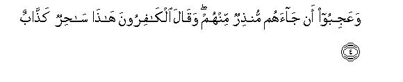
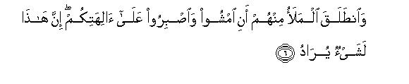
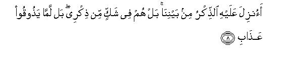
[4-8] These people wondered that a warner from among themselves has come to them.4 The disbelievers began to say, "He is a sorcerer,5 a liar! Has he made just One God in place of all the gods? This is indeed a strange thing!" And their chiefs went away,6 saying, "Go and stand firm in the service of your gods; for this thing7 is being said with a purpose.8 We have not heard such a thing from anyone of the people of latter days.9 This is nothing but a fabrication. Was he the only (fit) person among us to whom Allah's Admonition should have been sent down?"
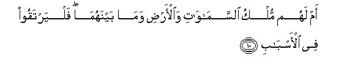
[9-10] The fact of the matter is that they doubt My "Admonition",10 and they say this because they have not yet tasted My punishment. Do they possess the treasures of the mercy of your Mighty and Bounteous Lord? Do they own the heavens and the earth and all that is between them? If so, let them climb up to the heights of the worldly means!11
[11-16] This is a small host from among the hosts, which shall be routed here.12 Before them did the people of Noah and 'Ad and the Pharaoh of the stakes,13 and Thamud, and the people of Lot and those of Aiykah reject (the Messengers). Hosts were they. Each one of them treated the Messengers as liars, and justly deserved the decree of My chastisement. These people too await but a single blast after which there will be no other blast!14 And they say; "Our Lord, hasten to us our share even before the Day of Reckoning."15
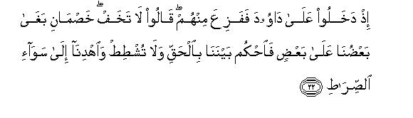
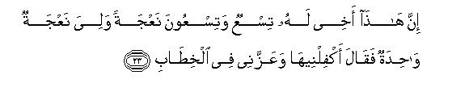
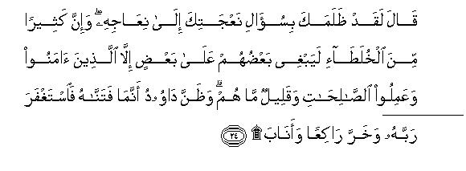
[17-26] O Prophet,have patience at what they utter,16 and tell them the story of Our servant David,17 who was a man of great strength.18 He turned to Allah in every matter. We had subdued for him the mountains, which joined with him in praise morning and evening. The birds would gather together: they all turned to his (hymns of) praise.19 We had strengthened his kingdom, had given him wisdom and the ability to pronounce sound judgments.20 Has the story of the litigants, who had entered into his upper chamber by climbing over the wall, reached you?21 When they came before David, he was alarmed to see them.22 They said, "Have no fear: we are two parties in a suit, one of which has wronged the other, so decide between us rightly: do not be unjust and guide us to the right way. This is my brother.23 He has ninety-nine ewes and I have only one ewe. He said to me, `Give this ewe also in my charge, and he has prevailed over me in the dispute'."24 David replied, "This person has certainly wronged you in demanding your ewe to be added to his ewes.25 And the fact is that the people who live together often wrong one another; the only exception are those who believe and do good works, and they are few. " (While he said this) David realized that We had, in fact, tried him. So he asked forgiveness of his Lord and fell down prostrate and turned (to Him).26 Then We forgave him for his error, and certainly he has a place of nearness with Us and an excellent abode!27 (We said:) "O David, We have made you vicegerent in the earth, so rule among the people with justice and do not follow your lust, for it will lead you astray from Allah's Way." For those who go astray from Allah's Way, there is a severe punishment because they forgot the Day of Reckoning."28
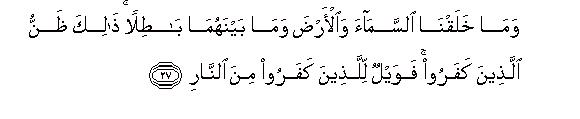
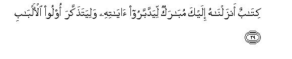
[27-29] We have not created the heavens and the earth and all that is between them in vain.29 This is the fancy of those who have disbelieved, and woe to such disbelievers from the Fire of Hell. Should We treat those who believe and do good works like those who spread mischief in the earth? Should We treat the pious as the sinners?30 This is a highly blessed Book,31 which We have sent down to you (O Muhammad), so that these people may ponder over its verses and the men of understanding may learn lessons from it.
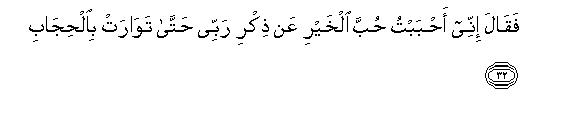
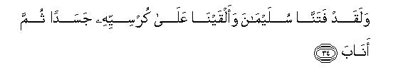
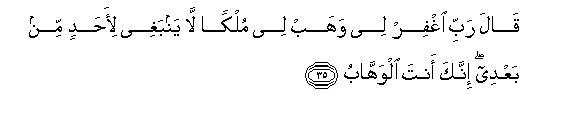
[30-40] And to David We gave (a son like) Solomon,32 an excellent servant, who turned to his Lord over and over again. Worthy of mention is the occasion when, one evening, well-bred horses were presented before him,33 and he said, "I have adopted the love of this wealth34 because of the remembrance of my Lord." So, when the horses disappeared from sight, (he commanded:) "Bring them back to me. " Then he began to stroke their shanks and necks.35 And (note that) We put Solomon too to the test and placed a mere body on his throne. Then he turned (to Allah), and said, "My Lord, forgive me and grant me a kingdom as may belong to no one else after me. Indeed, Thou art the real Giver."36 So, We subdued to him the wind, which blew gently at his bidding wherever he directed it.37 And We subjected to him the satans: all kinds of builders and divers and others who were bound in chains.38 (We said to him:) "This is Our gift: you may give to whomsoever you will and withhold from whomsoever you will, without reckoning."39 Surely, he has a place of nearness to Us and an excellent resort.40
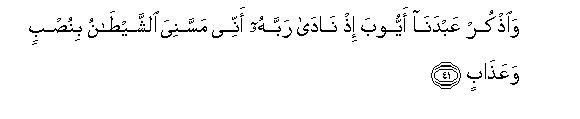
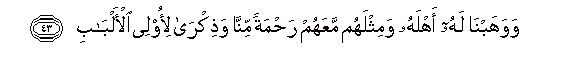
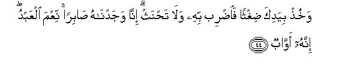
[41-44] And make mention of Our servant Job41 when he called upon his Lord, (saying), "Satan has afflicted me with great distress and torment."42 (We commanded him:) "Stamp your foot on the ground: this is cool water for washing and drinking."43 We restored to him his family and as many more with them,44 as a mercy from Ourself, and an admonition for the men of understanding.45 (And We said to him:) "Take a handful of straw and strike therewith: do not break your oath."46 We found him patient, an excellent servant, who turned to his Lord over and over again.47
[45-48] And make mention of Our servants, Abraham and Isaac and Jacob: they were men of great power and insight.48 We had chosen them because of a pure quality the remembrance of the abode of the Hereafter.49 Indeed, they are, in Our sight, included among the chosen, the righteous. And make mention of Ishmael and Elisha50 and Dhul-Kifl.51 they were all of the righteous.
[49-54] This was an admonition. (Now listen:) for the righteous there is indeed an excellent resort: everlasting Gardens whose gates shall remain open to them.52 Therein they shall be reclining, calling for plentiful of fruit and drink, and beside them there will be modest wives of equal age.53 These are the things which you are being promised for the Day of Reckoning. This is Our provision. It will never come to an end.
[55-60] This is (the recompense) for the righteous. And for the rebellious, there is a most evil home-Hell in which they will burn, the worst abode! This is for them: so let them taste boiling water and pus blood54 and other things of the same sort. (When they see their followers coming towards Hell, they will say to one another: ) "This is a host coming in to you: there is no welcome for them: they will burn in the Fire." They will reply, "Nay, but you yourselves are burning: there is no welcome for you (either): it is you who have brought us to this end. What an evil resting-place!"
[61-64] Then they will say, "Our Lord, give him who has brought this fate on us a double punishment in Hell." And they will say to one another, "How is it that we do not see those whom we regarded as bad people in the world?55 Did we treat them as such in ridicule, or are they hidden from sight?" Indeed, this is the Truth! Such will be the disputes among the dwellers of Hell.
[65-68] (O Prophet,)56 say to them, "I am only a warner.57 There is no real god but Allah, the One, the All-Mighty, Lord of the heavens and the earth and of all that is between them, the Mighty, the Forgiving." Say to them, "This is a great News from which you turn away."58
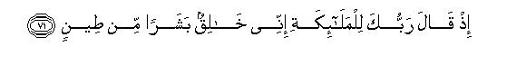
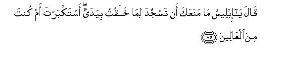
[69-85] (Say to them,) "I had no knowledge of the time when the exalted ones were disputing among themselves. I am informed of all this by revelation because I am an open warner." When your Lord said to the angels,59 "I am about to create man from clay.60 Then, when I have fashioned him duly, and have breathed into him of My Spirit,61 prostrate yourselves before him."62 Accordingly, the angels prostrated themselves, all in obedience, but Iblis assumed arrogance, and became one of the disbelievers.63 The Lord said, "O Iblis, what has prevented you from prostrating yourself before him whom I have made with both My hands?64 Are you assuming arrogance, or are you one of the high ones?" He replied, "I am better than he: You have created me from fire and him from clay." (The Lord) said: "Then get you gone from here.65 You are accursed,66 and My curse shall be on you till the Day of Judgment."67 He said, "My Lord, if so, then give me respite till the time when these people shall be raised (back to life)." (The Lord) said: "Well, you are given respite till the Day of appointed time." He said, "By Thy Honor! I shall certainly lead them astray except those of Thy servants whom Thou hast chosen."68 (The Lord) said, "The truth is this, and the truth only I speak, that I shall fill Hell with you69 and with all those who follow you from among mankind."70
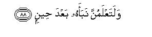
[86-88] (O Prophet,) say to them, "I do not ask any recompense of you for this message,71 nor am I an impostor.72 This is only an admonition for all the people of the world, and after a while you shall yourself come to know all about it."73
1Although like all other enigmatic letters (mugatta'at) it is difficult to determine the meaning of the letter Suad also, yet the interpretation of it given by Ibn 'Abbas and Dahhak is quite plausible. According to them, it implies: Sadiq-un fi' qauli-hi, or Sadaqa Muhammad-un: Muhammad (upon whom be Allah's peace and blessings) is Truthful: whatever he says is the very Truth.
2The words dhi-dh-dhikr of the Text can have two meanings: (1) Dhi sharaf: the noble Qur'an; and (2) Dhi at-tadhkir: the Qur'an which is full of admonition, or the Qur'an which serves as a reminder, or arouses a heedless person.
3If the interpretation given of suad by Ibn 'Abbas and Dahhak is accepted, the sentence would mean this: "By this noble Qur'an, or by this Qur'an which is full of admonition, Muhammad (upon whom be Allah's peace) is presenting the Truth, but the people who persist in their denial, are in fact, involved in arrogance and stubbornness." And if suad is taken as one of those enigmatic letters whose meaning cannot be determined, then the answer to the oath is omitted, which is indicated by "but" and the sentence following it. The meaning then would be: "The reason for the denial of these disbelievers is not that the religion which is being presented before them is unsound, or that Muhammad (upon whom be Allah's peace) has shown some slackness in the matter of presenting the Truth before them, but their own boasting and bragging, their haughtiness and stubbornness, and this is borne out by this Qur'an itself, which is full of admonition. Every unbiased person who studies it will admit that fill justice has been done in it to the task of making the people understand the Truth.
4That is, "They are so foolish that when a man from their own kind and from their own clan and brotherhood, whom they knew fully well, was appointed to warn them, they wondered at it, whereas it would have been strange if some other kind of creature had been sent down from heaven to warn human beings, or an utter stranger had arisen among them suddenly and started functioning as a prophet. In that case they would have been perfectly justified to say, "What an odd thing! How can this strange creature know our conditions and feelings and requirements that he should guide us? How can we test and find out the truth about the stranger who has suddenly arisen among us and know whether he is trustworthy or not? And how can we decide whether we should or should not believe in him when we have not judged and seen his character and personality?"
5The disbelievers used the word sahir (sorcerer, magician) for the Holy Prophet in the sense that whoever came in contact with him was so influenced by him that he would become his follower like a possessed person; he would least mind severing of his connections with others or incurring material losses; the father would give up the son and the son the father; the wife would separate from the husband and the husband from the wife; he would at once be prepared to leave his country if it was so required; he would even be ready to pass through the severest persecutions for the sake of the faith. (For further details, see Surah Al Anbiya' : 3 and E. N . 5 thereof).
6The allusion is to the chiefs who got up and left Abu Talib when they had heard what the Holy Prophet said.
7"This thing" : the Holy Prophet's asking them to affirm faith in "La ilaha ill-Allah " so as to overpower both Arabia and the adjoining lands.
8What they meant to say was this: "Muhammad has some vested interests: He is extending this invitation to us in order to subjugate us and rule us as his subjects."
9That is, "There have been our own elderly people in the recent past; there arc Christians and Jews also living in our land and in the adjoining lands; and there arc the Zoroastrians abounding in Iran and Iraq and eastern Arabia. None of them has ever preached that man should only believe in One Allah, Lord of the worlds, and in none else beside Him: no one can remain content with one God only: everyone believes in the beloved ones of Allah also: they arc All paying obeisance to them, making offerings at their shrines and praying for fulfillment of their needs and requirements. From one place people get children and from another provisions of life, and from yet another whatever they. pray for. The whole world believes in their powers and capabilities, and those who have benefited from them tell how the needs of the people are being met and their difficulties being removed through their help and grace. Now this man is telling us a queer thing which we had never heard before. He says that none of these holy men has any share in Godhead and that Godhead wholly belongs only to Allah!"
10In other words Allah says: " Muhammad, these people are not belying you but Me. As for your truthfulness, they had never doubted it before; now that they are doubting it, it is because of My Admonition; now that I have entrusted to you the Mission of admonishing them, they have started doubting the truthfulness of the very person whose righteousness and piety they used to swear by " The same theme has also been discussed above in Al-An'am: 33 and E.N. 21 thereof.
11This is an answer to this saying of the disbelievers "Was he the only (fit) person among us to whom Allah's Admonition should have lien sent down?' Allah says: "it is for Us to decide whom We should choose and appoint as a Prophet and whom We should not. These people do not possess any power and authority to exercise choice in this regard. If they wish to attain such an authority they should try to reach the Divine Throne in order to obtain control over the office of sovereignty of the Universe, so that revelation should come down on him whom they regard as deserving their mercy and not on him whom We regard as fit for it. "This theme has occurred at several places in the Qur'an, because the unbelieving Quraish again and again said, `How did Muhammad (upon whom be Allah' peace) become a Prophet? Did Allah find no better man among the principal leaders of the Quraish worthy of this office?"(See Surah Bani Isra'il: . 00; Az-Zukhruf: 31-32).
12"Here" implies the city of Makkah. That is, `The time is coming when these people shall be humbled and routed in the very place where they are opposing and mocking you., Then, they will be standing, with heads hung down, before the same man whom they despise and refuse to recognize as a Prophet of Allah."
13The use of dhil-autad (of the stakes) for Pharaoh is either in the sense that his kingdom was very strong as though a stake were firmly driven into the ground, or for the reason that wherever his large armies camped, pegs of the tents were seen driven into the ground on every side, or because he would torture and punish at the stakes anyone with whom he was angry; and possibly the stakes may imply the pyramids of Egypt which seem to be driven into the earth like the stakes.
14That is, `Only a single blast of the torment will be enough to annihilate them; no other will be needed for the purpose." Another meaning of the sentence can be: "After this they will get no more relief and no more respite. "
15That is, Allah's torment will be so severe and terrible as mentioned above, but just consider the behavior of these foolish people: they are telling the Prophet. mockingly: `Do not put off our affairs till the Day of Reckoning with which you are threatening us, but settle our account just now: whatever punishment is to be inflicted on us should be inflicted immediately.
16The allusion is to the absurd conversation of the disbelievers of Makkah, as narrated above, to the effect that the Holy Prophet was a sorcerer and a liar, and to their objection whether he was the only fit person in the sight of Allah to be appointed as a Messenger, and to their some accusation that he had vested interest in preaching the doctrine of Tauhid to the people and not any religious mission.
17Another translation of this sentence can be: `Remember Our servant David." According to the first translation, it would mean: "There is a lesson in this story for these people," and according to the second: "The remembrance of this story will help you too, to have patience. " As the narrative is meant to serve both purposes, comprehensive words have been used as contain both meanings. (For the story of the prophet David, see AI-Baqarah :251, Bani Isra'il: 55, Al Anbiya': 78-81, An-Naml: 15 and the E.N.'s thereof; and E.N.'s 14 to 16 of Saba).
18The words in the original are: dhal-ayd (possessor of the hands). The word "hand" is used metaphorically for strength and power not only in Arabic but in other languages also. When as an attribute of the Prophet David it is said that he was a "possessor of the hands", it will necessarily mean that he possessed great powers. These powers may mean the physical strength which he displayed during his combat against Goliath, military and political power by which he crushed the neighboring idolatrous nations and established a strong Islamic empire, moral strength by which he ruled like a poor king and always feared Allah and observed the bounds set by Him, and the power of worship by virtue of which, besides his occupations in connection with rule and government and fighting in the cause of Allah, he fasted every alternate day and spent a third of the night in worship according to a tradition of Bukhari. Imam Bukhari in his History has related, on the authority of Hadrat Abu ad-Darda', that whenever the Prophet David was mentioned, the Holy Prophet used to say: "He was the greatest worshiper of God. "
19For explanation, see Surah Al-Anbiya' :79 and E.N. 71 thereof.
20That is, "He was never ambiguous in speech but clear and forthright. Whatever problem he talked about he would lay bare its basic points, and would clearly and precisely determine the real issue under question, and would pass a decisive judgment. " This quality is not attained by a person unless he is granted wisdom, understanding and mastery of language of the highest degree.
21The object why the Prophet David has been mentioned here is to relate the story that begins from here; the object of mentioning his sterling qualities in the introduction was only to point out the high caliber of the Prophet David with whom this incident took place.
22He was alarmed because the two men had appeared in the private quarters of the ruler of the land suddenly, by climbing over the wall, instead of going before him by the proper entrance.
23"Brother" does not mean a real brother but a brother-in-faith and a member of one's own clan.
24To understand what follows one should note that the complainant did not say that the other person had taken away his only ewe and added it to his own ewes, but said that he was asking for it, and since he was a powerful person he had prevailed over him in the matter and he could not reject his demand, being a weak and poor man.
25Here, one should not doubt that the Prophet David gave his decision after hearing only what one party had to say. The fact of the matter, is that when the respondent kept quiet at the complaint of the complainant and said nothing in defense it by itself amounted to a confession by him. That is why the Prophet David came to the conclusion that the facts of the case were the same as the complainant had stated.
26There is a difference of opinion as to whether it is obligatory to perform a sajdah (prostration) on this occasion or not. Imam Shafe'i says that it is not obligatory, for this is only a Prophet' tepentance; but Imam Abu Hanifah has opined that prostration here is obligatory. The traditionalists have related three traditions from lbn- 'Abbas in this regard. According to 'Ikrimah, Ibn 'Abbas said: "this is not one of those verses on the recitation of which prostration is obligatory, but I have seen the Holy Prophet prostrating himself on this occasion. "(Bukhari, Abu Da'ud, Tirmidhi, NASa'I, Musnad Ahmad). The second tradition which Said bin Jubair has related froth Ibn 'Abbas is to the effect: 'The Holy Prophet prostrated himself in Surah Suad and said: 'The Prophet David (on whom be peace) had prostrated himself in order to express his repentance and we prostrate ourselves as a token of gratitude, because his repentance was accepted. (Nasa'i) In the third tradition that Mujahid has related from him, he says: "Allah has commanded the Holy Prophet, in the Qur'an: "These were the ones whom Allah had shown the Right Way: therefore, you should follow their way'." (AI-An'am: 90). Now, since David was a Prophet and he had prostrated himself on this occasion, the Holy Prophet also prostrated himself here only to follow his way. (Bukhari). These three arc the statements of Hadrat Ibn 'Abbas: and Hadrat Abu Sa' id Khudri says: "The Holy Prophet once recited Surah Suad in his address, and when he came to this verse, he descended from the pulpit and performed a prostration and the audience also did the same along with him. Then, on another occasion, he recited this same Surah and when the people heard this verse, they were ready to perform the prostration. The Holy Prophet said 'This is the repentance of a Prophet, but I see that you have got ready to perform the prostration' --Saying this he descended from the pulpit and prostrated himself and the people also did the same." (Abu Da'ud). Although these traditions do not provide any absolute argument to prove that it is obligatory to perform the prostration here, yet they prove at least that because the Holy Prophet generally performed a prostration on this occasion, it is in any case commendable to prostrate here.
Another thing that one notices in this verse is that Allah has used the words kharra raki'an (fell in ruku') here, but All the commentators arc agreed that this implies kharra sajid-an (fell in sajdah: prostration). On this very basis, Imam Abu Hanifah and his companions have expressed the opinion that one may perform only a ruku' instead of a sajdah, when one recites or hears being recited a verse requiring a sajdah in the Prayer or outside it. For when Allah has used the word ruku' to imply sajdah, it becomes obvious that ruku' can represent sajdah. Imam Khattabi, a Shafe'ite jurist, also holds the same opinion, Though this opinion in itself is sound and reasonable, we do not find any precedent in the practices of the Holy Prophet and his Companions that they might have been content with performing a ruku' only instead of a sajdah on a verse requiring a sajdah. Therefore, one should act upon the view only when there is an obstruction in performing the sajdah; it would be wrong to make it a practice, Imam Abu Hanifah and his companions themselves also did not intend that it should be made a practice; they only ruled that it was permissible.
27This shows that the Prophet David had certainly committed an error, and it was an error which bore some resemblance with the case of the ewes. Therefore, when he gave a decision on it, he at once realized that he was being put to the test. But the nature of the error was not such as could be forgiven, or if forgiven, it would have deposed him from his high rank. Allah Himself says: "When he fell down prostrate and repented, he was not only forgiven but his high rank in the world and the Hereafter also remained unaffected.
28This is the warning that Allah gave the Prophet David on accepting his repentance along with giving him the good news of exalting his rank. This by itself shows that the error that he had committed contained an clement of the desires of the flesh; it also pertained to the abuse of power and authority; and it was an act which was unworthy of a just and fair-minded ruler.
We are confronted with three questions here:
(1) What was the error that the Prophet David committed?
(2) Why has Allah made only tacit allusions to it instead of mentioning it openly and directly?
(3) What is its relevance to the present context?
The people who have studied the Bible (the Holy Book of the Jews and Christians) are not unaware that in this Book the Prophet David has been accused clearly of committing adultery with the wife of Uriah the Hittite and then marrying her after having Uriah intentionally slain in a battle. It has also been alleged that this same woman, who had surrendered herself to the Prophet David, while being another man's wife, was the mother of the Prophet Solomon. This story is found with all its details in chapters 11 and 12 of the Second Book of Samuel in the Old Testament. It had been included in it centuries before the revelation of the Qur'an. Any Jew or Christian who read his Holy Book anywhere in the world, or heard it read, was not only aware of this story but also believed in it as true. It spread through them, and even in the present time no book is written in the West on the history of the Israelites and the Hebrew religion, in which this charge against the Prophet David is not repeated. This well known story also contains the following:
And the Lord sent Nathan onto David. And he came unto him, and said unto him, There were two men in one city; the one rich, and the other poor. The rich man had exceeding many flocks and herds: But the poor man had nothing, save one little ewe Iamb, which he had bought and nourished up: and it grew up together with him, and with his children; it did eat of his own meat, and drank of his own cup, and lay in his bosom, and was unto him as a daughter. And there Came a traveler Unto the rich man, and he spared to take of his own flock and of his own herd, to dress for the wayfaring man that was come unto him; but took the poor man' Iamb, and dressed it for the man that was come to him. And David's anger was greatly kindled against the man; and he said to Nathan, As the Lord liveth, the man that hath done this thing shall surely die: And he shall restore the lamb fourfold, because he did this thing, and because he had no pity. And Nathan said to David, Thou art the man. Thus saith the Lord God of Israel, I anointed thee king over Israel, and I delivered thee out of the hand of Saul; And I gavc thee thy master's house, and thy master's wives into thy bosom, and gave thee the house of Israel and of Judah; and if that had been too little, I would moreover have given unto thee such and such things. Wherefore hast thou despised the commandment of the Lord, to do evil in his sight? Thou hast killed Uriah the Hittite with the sword, and hast taken his wife to be thy wife, and hast slain him with the sword of the children of Ammon." (2 Samuel, ch 12: 1-9).
When this story was so well known among the people there was no need that a detailed account of it should have been given in the Qur'an, nor is it the way of Allah to mention such things openly in His Holy Book. That is why only tacit allusions have been made to it here as well as pointed out what the actual event was and what the people of the Book have turned it into. The actual event as one clearly understands from the aforesaid statement of the Qur'an was:
The Prophet David peace be upon him) had only expressed this desire before Uriah (or whatever be the name of the man) that he should divorce his wife; as this desire had been expressed not by a common man but by an illustrious king and a great Prophet before a member of the public, the man was finding himself constrained to yield to it even in the absence of any compulsion. On this occasion, before the man could act as the Prophet David had desired, two righteous men of the nation suddenly made their appearance before David and presented before him this matter in the form of an imaginary case. At first, the Prophet David thought it was a real case, and so gave his decision after hearing it. But as soon as he uttered the words of the decision, his conscience gave the warning that the parable precisely applied to the case between him and the person, and that the act which he was describing as an injustice had issued forth from his own person. As soon as he realized this, he fell down prostrate, repented and reversed his decision. "
The question, as to how this event took the ugly shape as related in the Bible, also becomes obvious after a little consideration. It appears that the Prophet David had come to know of the unique qualities of the woman through some means and had started thinking that she should be the queen of the country instead of being the wife of an ordinary officer, Overwhelmed by the thought he expressed the desire before her husband that he should divorce her. He did not see any harm in it because it was not looked upon as anything improper among the Israelites. It was an ordinary thing among them that if a person happened to like the wife of another, he would freely request him to give her up for him. Nobody minded such a request, and often it so happened that friends would divorce their wives for each other's sake of their own accord, so that the other may marry her. However, when the Prophet David expressed this desire, he did not realize that the expression of such a desire could be without compulsion and coercion when expressed by a common Man, but it could never be so when expressed by a king. When his attention was drawn to this aspect of the matter through a parable, he gave up his desire immediately, and the thing was forgotten. But afterwards when, without any desire or planning on his part, the woman's husband fell martyr on the battlefield, and he married her, the evil genius of the Jews started concocting stories and this mischievous mentality became even more acute after a section of the Israelites turned hostile to the Prophet . Solomon. (Please see E. N . 56 of An-Naml). Under these motives the story was invented that the Prophet David, God forbid, had seen Uriah's wife washing herself from the roof of his palace. He had her called to his house and committed adultery with her and she had conceived. Then he had sent Uriah on the battle-front to fight the children of Ammon, and had commanded Joab, the army commander, to appoint him in the forefront of the battle where he should be killed. And when he was killed, he married his widow, and from the same woman the Prophet Solomon (peace be upon him) was born. The wicked people described all these false accusations in their "Holy Book", so that they should go on reading it generation after generation and slandering the two most illustrious men of their community, who were their greatest benefactors after the Prophet Moses.
A section of the commentators of the Qur'an has almost entirely accepted these tales that have reached them through the Israelites. They have dropped only that pan of these traditions in which mention has been made of the accusation of adultery against the Prophet David and the woman's having conceived. The rest of the story. as found in the traditions reproduced by them is the same as it was well known among the Israelites. Another group of the commentators has altogether denied that any such act was ever committed by the Prophet David, which bore any resemblance with the case of the ewes. Instead of this, they have put forward such interpretations of this story as are wholly baseless, unauthentic and without relevance to the context of the Qur'an itself. But among the Muslim commentators themselves there are some who have accepted the truth and the facts of the story through the clear references made to it in the Qur'an. Here are, for instance, some of their views:
Both Masruq and Said bin Jubair have related this saying of Hadrat 'Abdullah bin 'abbas. "The only thing that the Prophet David did was that he expressed his desire before the woman' husband that he should give up his wife for him. " lbn Jarir).
'Allama Zamakhshari writes in his commentary Al-Kashshaf. 'The way Allah has narrated the story of the Prophet David indicates that he had only expressed his desire before the man that he should leave his wife for him. "
'Allama Abu Bakr al-Jassas has expressed the opinion that the woman was not the other man's wedded wife but was only his betrothed. The Prophet David had also asked for the same woman's hand in marriage. This earned him Allah's displeasure, for he had asked for her hand in spite of the fact that another Muslim had already asked for her hand, and the Prophet David had several wives already with him in his house. (Ahkam al-Qur an). Some other commentators also have expressed the same opinion, but this does not entirely conform to what the Qur'an has said. The words of the suitor as related in the Qur'an are to the effect: "I have only one ewe; he says: Give this ewe also in my charge." The Prophet David also said the same thing in his decision: "This person has certainly wronged you in demanding your ewe to be added to his ewes." This parable could apply to the case between the Prophet David and Uriah only in case the woman was the latter's wife. Had it been the cast of asking for the woman's hand when another Muslim had already asked for her hand, the parable would have been like this: "I desired to have an ewe, ard this man said: Icave this also for me."
Qadi Abu Bakr Ibn al-'Arabi has discussed this question in detail in his Ahkam al-Qur an and concluded: "What actually happened was just that the Prophet David asked one of his men to leave his wife for him and made this demand seriously ...The Qur'an does not say that the man gave up his wife on this demand and the Prophet David then married her and the Prophet Solomon was born of her womb . . . W hat displeased Allah was that he asked the woman's husband to leave her for him. This act, even if otherwise lawful, was unworthy of the office of Prophethood; that is why he earned Allah's displeasure and was admonished. "
This commentary fits in well with the context in which this story has been told. A little consideration of the context shows that it has been related in the Qur'an on this occasion for two objects. The first object is to exhort the Holy Prophet to patience, and for this purpose he has been addressed and told: ¦Have patience on what these people say against you, and remember Our servant David." That is, 'You are being accused only of sorcery and lying, but Our servant David was even accused of adultery and having a person killed willfully, by the wicked people: therefore, bear up against what you may have to hear from these people." The other object is to warn the disbelievers to the effect: ¦You are committing all sorts of excesses in the world with impunity, but the God in Whose Godhead you are committing these misdeeds does not spare anyone from being called to account. Even if a favorite and beloved servant of His happens to commit but a minor error, He calls him to strict accountability. For this very object the Holy Prophet has been asked: 'Tell them the story of Our servant David, who was a man of high character, but when he happened to commit sin, We did not even spare him but condemned him severely' . "
In this regard, there is another misunderstanding which mast also be removed. The suitor in his parable said that his brother had 99 ewes and he had only one ewe, which he was demanding from him. From this one gets the idea that perhaps the Prophet David had 99 wives, and by having another he wanted to make their number 100. But, in fact, it is not necessary that every minor part of the parable should be literally applicable to the case between the Prophet David and Uriah the Hittite. In common idiom the numbers ten, twenty, fifty, etc. are mentioned to express plurality and not to indicate the exact number of something. When a man tells another that he has told him something ten times over, he only means to stress that he has been told that thing over and over again. The same is also true here. By means of the parable the suitor wanted the Prophet David to realize that he already had several wives with him, and even then he desired to have the only wife of the other man. This same thing has been cited by the commentator Nisaburi from Hadrat Hasan Basri: `The Prophet David did not have 99 wives: this is only a parable." (For a detailed and well-reasoned discussion of this story, see our book Tafhimat, vol. II, pp. 29.44).
29That is, "We have not created anything in the world merely in sport and fun so that it may be without any wisdom and purpose and justice, and there may acme no result from any act, good or bad." This is the conclusion of the preceding discourse as well as an introduction to the following theme. The object of this statement as a conclusion to the discourse is to impress the following truth: ¦Man has not been left to wander about at will in the world, nor is this world a lawless kingdom that one may do here whatever one likes with impunity." As an introduction to the following theme, the sentence is meant to say: "The person who does not believe in the meting out of the rewards and punishments, and thinks that both the good and the evil people will ultimately end up in the dust after death and that nobody will be called to account, nor will anyone be rewarded for good or punished for evil, in fact, regards the world as a plaything and its Creator a senseless player, and thinks that by creating the world and man in it, the Creator of the Universe has committed a useless thing. The same thing has been stated in different ways at several places in the Qur'an, e.g. ¦Did you think that We created you without any purpose, and that you would never be brought back to Us?" (AI-Mu'minun: 115).
"We have not created the heavens and the earth and whatever lies between them merely in sport: We have created them with the truth, but most of them do not know. For the resurrection of them all the appointed time is the Day of Decision." (Ad-Dukhan: 38-40).
30That is, "Do you think it is reasonable and fair that both the pious and the wicked should be treated alike in the end? Do you regard this concept as satisfying that the pious man should not get any reward for his piety and the wrongdoer should not receive any punishment for his sins? Obviously, if there is to be no Hereafter, and there is to be no accountability and no rewards and no punishments for human acts, it negates both Allah's wisdom and His justice, and the entire order of the Universe becomes a blind order. On this assumption there remains no motive for doing good and no deterrent against evil. God forbid, if the Godhead of God should be such a lawless kingdom, the one who leads a pious lift in the face of all kinds of hardships in the world and endeavors to reform the people, would be a foolish person, and the one who gains benefits by committing All kinds of excesses and enjoys sinful pleasures of life, would be a wise man."
31The Qur'an has been called a blessed Book in the sense that it is highly useful for man: it gives him the best guidance to improve and reform his life: by following it he has only to gain and nothing to lose.
32The Prophet Solomon has been mentioned already at the followings places: AI-Baqarah: 102, Bani Isra'il: 5, AI-Anbiya': 78-82, An-Naml: 15-44, Saba: 12-14.
33The words as-sefinat-ul- jiyad in the original imply the horses, which are very calm and quiet when they stand, and very fast-moving when they run.
34The Arabic word khair in the Text is used for abundance of wealth as well as for horses metaphorically. As the Prophet Solomon had kept these horses for fighting in the way of Allah, he called them "khair".
35There is a difference of opinion among the commentators about the translation and commentary of these verses.
One section of them interprets them as follows:
The Prophet Solomon became so absorbed in reviewing the horses and watching their races, that he forgot to offer his 'Asr Prayer, or according to some others, to perform certain devotions that he used to perform before the sunset. Then when the sun went down, he commanded that the horses be brought back, and when they came back, the Prophet Solomon started slashing them with the sword, or in other words, slaughtering them as a sacrifice to Allah, because they had caused him to become heedless of the remembrance of Allah. Accordingly, the verses have been translated thus: "And he :aid: I so preferred the love of this wealth that I became heedless of the remembrance (the 'Asr Prayer, or the special devotions) of my Lord till (the sun) went down (behind the veil of the west). (Then he commanded : ) bring them back, (and when the horses came back) he began to stroke their shanks and necks (with the sword)." Although this commentary has been given by some major commentators, it is not plausible for the reason that in this the commentator has to add three things from himself, which have no basis whatever. In the first place, he has to assume that the Prophet Solomon's 'Asr Prayer was lost in the occupation, or some special devotions that he used to perform at that time, whereas the words of the Qur'an are only to the effect: "I so preferred this wealth that I became heedless of the remembrance of my Lord. " In these there is no ground for taking any word for the `Asr Prayer or the special devotions. Secondly, he also assumes that the sun set where as there is no mention of the sun whatever. On the contrary, when one reads the words hatta tawarar bil-hijab (when they disappeared from sight) one's mind automatically turns to as-safinat ul jiyad (well-bred horses) which have been mentioned in the preceding verse. Thirdly, he also has to assume that the Prophet Solomon did not simply stroke the shins and necks of the horses with the hand but stroked them with the sword, whereas the Qur'an does not contain the words mashan-bis-saif or any other pointer from which stroking may be taken to mean stroking with the sword. We have a fundamental difference with this kind of the commentary. In our opinion, only in four cases it would be right to interpret the words of the Qur'an in other than their normally accepted meaning: (1) Either there should be a pointer to it in the words of the Qur'an itself; or (2) there should be an allusion to it at some other place in the Qur'an; or (3) an explanation of it should be afforded by some authentic Hadith; or (4) it should have some other reliable source, e.g., if it pertains to history, there should be an historical evidence to support it; if it pertains to the manifestations of the universe, there should be authentic scientific knowledge to substantiate it; and if it pertains to the Shari'ah values, the sources of Islamic law should explain it. In the absence of any of these, we do not think it is right to invent a story on the basis of one's own imagination and add it to the words of the Qur'an.
One section of the commentators has differed a little from the about translation and commentary. They say that the pronoun in both hatta tawarat bil-hijab and ruddu-ha 'alayya turns only to the sun. That Is, when the `Asr Prayer was lost and the sun went down behind the veil of the west, the Prophet Solomon said to the workers of destiny: "Turn the sun back so that the `Asr time comes back for me to offer the Prayer." So, the sun retreated and he performed his Prayer. Hut this commentary is even more unacceptable than the previously mentioned one not because Allah is powerless to bring the sun back, but because Allah has made no mention of it anywhere. On the contrary, if such a wonderful miracle had actually been worked for the sake of the Prophet Solomon, it would certainly be worthy of mention. Moreover, if the extraordinary event of the returning of the sun after having set had actually taken place; the history of the would would never be without it. In support of this commentary these commentators _present some Ahadith also in order to prove that the returning of the sun after having set is not a rare event that happened only once, but it has happened several times. There is the mention of bringing the sun back in connection with the Holy Prophet's Ascension (mi'raj); the sun was also brought back on the occasion of the Battle of the Trench for the Holy Prophet, and also for Hadrat `Ali, when the Holy Prophet was sleeping with his head in Hadrat Ali's lap and his 'Asr Prayer was lost: then the Holy Prophet had prayed for the return of the sun and it had returned. But the reasoning from these traditions is even weaker than the commentary in support of which they have been presented. Ibn Taimiyyah has proved as fabricated the tradition about Hadrat `Ali after a detailed discussion of its chains and transmitters. Imam Ahmad says it has no basis, and Ibn Jauzi says that it is without any doubt a forged tradition. The tradition of the sun's being brought back on the occasion of the Battle of the Trench also is weak according to some traditionalists and fabricated according to others. As far as the tradition regarding the event of the Ascension is concerned, the truth about it is that when, the Holy Prophet was describing what had happened in the Night of Ascension, before the disbelievers of Makkah, they asked for a proof of it. The Holy Prophet replied that on the way from Jerusalem he had seen a caravan at such and such a place, which had met with such and such an accident. When asked as to when that caravan would reach Makkah, the Holy Prophet named the day. When the day came, the people of the Quraish waited for the caravan all day till the sun began to set. On this occasion the Holy Prophet prayed that the sun should not set till the caravan had arrived. So, the caravan actually arrived before the sunset. Some reporters even have stated that the day on that occasion had been enhanced by an hour, and the sun had stood still for that long. The question is: Are such traditions sufficient evidence for the proof of such an extraordinary event? As we have said above, the returning of the sun, or its standing still for an hour, is no ordinary event. Had such an event actually taken place, it would have become well known the world over. Its mention and narration could not remain restricted to only a few reporters.
The third section of the commentators interprets these verses as any unbiased person would interpret them from these words. According to this commentary, what actually happened was this: When a squadron of fine, well bred horses was presented before the Prophet Solomon, he said: "I love this wealth not for the sake of personal glory or desire but for the cause of raising the Word of my Lord." Then he ordered that the horses run a race, and they disappeared from sight. Then he ordered that they be brought back, and when they were brought back, according to Ibn `Abbas: "He started passing his hand on their necks and shanks with love." This same commentary is correct in our opinion, because it corresponds to the words of the Qur'an, and for the sake of the full meaning, nothing needs to be added to it, which may neither be in the Qur'an, nor in any authentic Hadith, nor in the Israelite history.
Besides, one should also note that Allah has narrated this event immediately after using epithets like ni'm al-'abd, inna-hu awwab (an excellent servant, who turned to His Lord over and over again) for the Prophet Solomon. This clearly shows that the object is to relate this message: Behold, what a good servant of Ours he was! He loved the means of kingly pomp and glory not for the sake of the world but for Our sake! After watching - and reviewing his grand cavalry he did not boast of his power and grandeur like the worldly rulers but even at that time he remembered only Us.
36In view of the contest, the real object here is to relate this event; the preceding verses are an introduction to it. Just as above this, first the Prophet David was praised, then the event narrated by which he was put to temptation, then it was said that Allah Almighty does not spare even such a beloved servant from accountability, then about his noble nature it was said that as soon as he was warned of the temptation, he repented and bowed before Allah and withheld himself from the act, so also here the sequence is like this: First, the Prophet Solomon's high rank and his deep sense of devotion has been mentioned, then it is said that he also was put to the test, then it has been stated that when a mere body was placed on his throne, he immediately felt warned on his error, and pleading the forgiveness of his Lord, withdrew from the act, because of which he was involved in the temptation. In other words, Allah by means of these two stories wants to impress two things upon the reader simultaneously: (1) Not to speak of the common men, even high-ranking Prophets were not spared from His strict accountability; and (2) the right attitude for man is not to brag and feel proud after committing an error, but to bow down humbly before his Lord as soon as he realizes his sin. It was the result of this attitude that Allah not only forgave the mistakes of those illustrious men but blessed them with still more favors and kindness.
Here, the question again arises as to what was the temptation in which the Prophet Solomon was involved; what is the meaning of placing a mere body on his throne, and what was the nature of the warning on the occurrence of which he repented? In reply to this the commentators have adopted four different points of view:
One section of them has related a long story whose details are disputed, but their resume is this: The error committed by the Prophet Solomon was either that one of his wives continued to worship the idols in the palace for forty days and he remained unaware of it, or that he remained confined to his residence for a few days and did not attend to redressing of the oppressed people's grievances. For this he was punished as follows: A satan somehow made away with his ring by which he ruled over the jinns, men and wind. As soon as he lost the ring he was deprived of his powers and he remained wandering from place to place for forty days; in the interval the satan continued to rule in the guise of Solomon. The placing of a mere body on Solomon's throne implied this very satan, who had sat on his -throne. Some people have gone to the extent to say that during that period even the chastity of the women in the royal household did not remain safe from the satan. At last from his conduct the ministers and the chiefs and the scholars of the court began to doubt that he was not Solomon. Therefore, when they opened the Torah before him, he fled. On the way the ring fell from his hand in the sea, or he cast it into the sea himself, and a fish swallowed it. Then, somehow the Prophet Solomon came by the fish. When in order to cook it, he cut open its belly he found his ring in it. Then, no sooner did he get the ring than the jinns and men presented themselves humbly before him.--This whole story, from the beginning to the end, is nonsensical and absurd, which the converts from among the Jews and Christians took from the Talmud and other Israelite traditions and spread it among the Muslims. It is strange that some of our well known scholars took these traditions as authentic and cited them as the explanation of the allusions of the Qur'an, whereas neither is there any truth in Solomon's ring, nor could his glorious works be attributed to any ring, nor had the satans been given the power that they might disguise themselves as Prophets and mislead the people, nor can it be imagined about Allah that He would punish a Prophet for an error in such a manner as to enable a satan to corrupt and destroy a whole community, disguised as a prophet. The Qur'an itself repudiates this commentary. In the verses that follow Allah says: When Solomon met with the trial, and he asked Our forgiveness for it, then We subdued the wind and the satans to him. Hut, on the contrary, according to the above commentary, the satans were already under his control by virtue of the ring. It is strange that the scholars who have made this commentary did not care to consider what the subsequent verses say.
The second section of them says that a son was born to the Prophet Solomon after twenty years. The satans feared that if he became king after Solomon, they would continue to remain slaves as they were under him. Therefore, they plotted to kill him. When Solomon came to know of this plot, he hid the child in the clouds so that he was brought up there. This was the temptation in which he was involved: he placed reliance on the protection of the clouds instead of having trust in Allah. For this he was punished in this way that the child died and fell on his throne as a mere body .... This tale also is baseless and is expressly against the Qur`an, for in this also it has been assumed that the winds and satans were already under the Prophet Solomon's control, whereas the Qur'an in clear words has stated their subjection to be an event that took place after the trial.
The third section says that the Prophet Solomon one day swore that he would go in to his 70 wives that night, and from each a warrior would be born, who would fight in the cause of Allah, but while he said this he did not say: Insha Allah: if Allah so wills. Consequently, only one wife conceived and from her also a defective child was born, whom the midwife brought and placed on his throne. This Hadith has been reported by Hadrat Abu Harairah from the Holy Prophet and it has been related by Bukhari and Muslim and other traditionists in several ways. In Bukhari itself this tradition has been related at different places in different ways. At one place the number of the wives has been stated as 60 and at others 70 or 90 or 99 or 100. As far as the chains of the transmitters are concerned, most of the traditions have strong chains, and their authenticity cannot be disputed from the point of view of the principles of reporting. But the subject-matter of the Hadith is patently against reason, and proclaims aloud that such a thing could not have been said by the Holy Prophet, as reported. But, on the contrary, he might have probably mentioned it as an example of the foolish and nonsensical tale-telling of the Jews, and the hearer might have misunderstood that the Holy Prophet himself had stated it as an event. To force the people to accept such traditions only on the strength of their chains of transmitters would be making religion a matter of mockery and jest. Everyone can calculate for himself that even in the longest night of winter the interval between the `Isha` and the Fajr Prayers cannot be of more than ten to cloven hours. If the minimum number of the wives be 60, it would mean that the Prophet Solomon (peace be upon him) went on having intercourse with them continuously for 10 to 11 hours that night at the rate of six wives per hour, without having a moment's rest. Is it practically possible? And can it be expected that the Holy Prophet might have related it as an event? Then in the Hadith nowhere has it been said that the body that had been placed on Solomon's throne, as stated in the Qur'an, implied the malformed child. Therefore, it cannot be claimed that the Holy Prophet had narrated this event as a commentary of this verse. Furthermore, though it is understandable why the Prophet Solomon asked for Allah's forgiveness on the birth of the child, one fails to understand why, along with the prayer for forgiveness, he prayed: "My Lord, grant me a kingdom as may belong to no one else after me. "
Another commentary which Imam Razi has preferred is this: The Prophet Solomon was afflicted with a serious disease, or on account of an impending danger his body had been reduced to a mere skeleton. But this commentary also does not conform to the words of the Qur'an. The Qur'an says: "We put Solomon to the test and placed a mere body on his throne. Then he turned (to Allah). " From these words no one can understand that the mere body implied the body of the Prophet Solomon himself. They clearly show that putting to the test implied some error that. he happened to commit. On this, the way he was given the warning was that a mere body was placed on his throne, and when he realized his error he turned to Allah.
As a matter of fact, this is one of the most difficult places of the Qur'an, and we do not find any indisputable ground for giving a definite and absolute commentary of it. But if the words of the Prophet Solomon's prayer: "My Lord, forgive me, and grant me a kingdom as may belong to no one else after me," are read in the light of the Israelite history, it appears that probably he cherished in his heart the desire that his son should succeed him on the throne so that His kingdom and sovereignty should continue in his own race after him. This same thing has been called a "temptation" for him by Allah, and he realized this when his heir Rehoboam grew up into an unworthy young man, whose ugly manners clearly foretold that he would not be able to sustain the mighty kingdom of the Prophets David and Solomon (peace be upon them) even for a few days. ¦Placing a mere body on his throne" probably means that the son whom he wanted to succeed him on the throne, was an unworthy person. Therefore, he restrained his desire, asked for Allah's forgiveness and prayed that the kingdom should end with him, and he would curb his desire to have it continued in his dynasty. The Israelite history also shows the same thing. The Prophet Solomon did not make any will about his successor, nor made it binding for the people to obey a particular person. After him his ministers put Rehoboam on the throne, but not long afterwards ten tribes of Israel took northern Palestine and broke away, and only the tribe of Judah remained loyal to the throne of Jerusalem.
37For explanation, see Surah Al-Anbiya`: 81 and E.N. 74 thereof. However, there is one thing which requires further explanation here. In Surah Al Anbiya` where mention has been made of subjecting the wind for the Prophet Solomon, it has been described as `the strongly blowing wind, but here "which blew gently at his bidding" . This means that the wind in itself was strong and violent as is needed for moving the sailing-ships but it had been made gentle for the Prophet Solomon in the sense that it blew whither-so-ever he wanted it to blow for his commercial fleets.
38For explanation, see Al-Anbiya': 82, An-Naml: 17, 39 and the E.N.'s thereof. "The satans" imply the jinns, and "the satans bound in chains" imply the serving satans, who were fettered and imprisoned as a punishment for making mischief. It is not necessary that the fetters and chains in which those satans were bound might be made of iron and they might appear as bound in them like the human prisoners. In any case, they were imprisoned in a manner that they could neither escape nor were able to commit further mischief.
39This verse can have three meanings: (1) "This is Our unlimited gift: you have the authority to give of it freely w whomsoever you like and keep it from whomsoever you like;" (2) "this is Our gift: you may give of it to whomsoever you like and keep it from whomsoever you like: you will not be called to account for giving it or keeping it from the people;" and (3) Another meaning of it given by some commentators is: The satans have been placed entirely under your control: you may set free whomsoever you like and restrain whomsoever you like: you will not be held accountable for this."
40Here, the object is to tell that just as a servant's arrogance causes Allah's displeasure and wrath, so does his humility earns Allah's pleasure and approval for him. If a servant commits an error and becomes even more arrogant when warned, he is led to the same fate as is being mentioned in connection with the story of Adam and Satan below. Contrary to this, if a servant happens to commit an error and he repents and bows down before his Lord humbly, he is blessed with such bounties as the Prophets David and Solomon were blessed with. The prayer that Solomon had made after seeking Allah's forgiveness, was literally fulfilled and Allah actually granted him a kingdom as had neither been granted to anyone before him nor bestowed on anyone after him. Having control over the winds and the jinns is an extraordinary power, which has been granted only to the Prophet Solomon and to none else in human history.
41This is the fourth place in the Qur'an where the Prophet Job has been mentioned. Before this he has been mentioned in An-Nisa. 163, Al-An'am: 84 and AI-Anbiya': 83-84 above. For the details about him, please see E.N.'s 76 to 79 of Surah Al-Anbiya'
42This does not mean that Satan has afflicted me with illness and brought distress upon me, but it means: "The affliction of the severities of illness, the loss of property and wealth, and the desertion of the near and dear ones, is not so great a torment and trouble for me as the temptation of Satan, who is exploiting my condition to despair me of my Lord and wants that I should turn ungrateful to Him and become desperate and impatient." This meaning of the lamentation of the Prophet Job is preferable for two reasons: (1) According to the Qur'an, Allah has granted Satan only the power of temptation: He has not given him the power to afflict with illness the worshipers of Allah and compel them to deviate from the way of service and obedience by causing them physical ailments. (2) In Surah Al Anbiya' when the Prophet Job puts before Allah his complaint about illness and disease, he does not mention Satan at all, but says only: "I have been afflicted with the disease and You are most Merciful."
43That is, "As soon as he stamped his foot on the ground, a spring gushed forth by Allah's Command, drinking from which and washing with which was the remedy of the Prophet Job's disease." Most probably he was suffering from some skin disease. According to the Bible also: "Satan smote Job with sore boils from the sole of his foot unto his crown. " (Job, 2: 7).
44Traditions show that during this illness everyone except his wife had deserted the Prophet Job; even his children had turned away. To this Allah has alluded, saying: "When We granted him health, the whole family returned to him, and then We granted him even more children."
45That is, in it there is a lesson for an intelligent man: "Neither should man forget God and become arrogant in good times nor despair of Him in bad times: Good fortune and misfortune are entirely in the Power of Allah, the One. If He wills He can change the best times of man into the worst times and the worst into the best. Therefore, a wise person should trust in Him alone in all sorts of circumstances and should pin all his hopes on Him."
46A careful study of these words shows that the Prophet Job during illness had been annoyed with somebody (according to traditions, his wife) and sworn to beat him or her by giving so many stripes. When Allah restored him to health and the anger of the illness was gone, he became worried as how to fulfill the oath. For if he carried out the oath, he would be inflicting pain on an innocent person, and if he did not, he would be committing the sin of breaking the oath. Allah took him out of the difficult situation by the Command: "Take a broom containing as many sticks of straw as the number of the stripes you had sworn to give;then strike the person just once with the broom so as both to fulfill your oath and to avoid giving undue trouble to the person concerned."
Some jurists hold the view that this concession was specially meant for the Prophet Job, and some others think that other people also can take advantage of it. The first view has been cited by Ibn 'Asakir from Hadrat 'Abdullah bin 'Abbas and by Abu Bakr al-Jassas from Mujahid, and Imam Malik also held the same view. The second view has been adopted by Imam Abu Hanifah, Imam Abu Yusuf, Imam Muhammad, Imam Zufar and Imam Shafe' i. They say that if a person, for instance, has sworn to give his servant ten stripes, and afterwards combines ten whips and strikes him only once in a way that some part of each whip strikes him, his oath will be fulfilled.
Several Ahadith show that the Holy Prophet, in order to inflict the prescribed punishment on a fornicator who was too ill or too weak to receive a hundred stripes, also adopted the method taught in this verse. 'Allama Abu Bakr al-Jassas has related a tradition on the authority of Hadrat Said bin Sa'd bin 'Ubadah to the effect that a person from the tribe of Bani Sa`idah happened to commit fornication, and he was a sick man and a mere skeleton. Thereupon the Holy Prophet commanded: "Take a branch of the palm tree with a hundred twigs on it and strike him therewith once and for all. " (Ahkam al Qur 'an). In Musnad Ahmad, Abu Da'ud, Nasa'i, Ibn Majah, Tabarani, 'Abdur Razzaq and other collections of Hadith also there are several Ahadith supporting it, which conclusively proves that the Holy Prophet had devised this very method for inflicting the prescribed punishment on a sick or weak person. However, the jurists lay the condition that some part of every twig or piece of straw must strike the culprit, and even if only one stroke, it must also hurt the culprit; that is, it is not enough just to touch him but he must be struck with it.
Here the question also arises that if a person has sworn to do something and afterwards he comes to know that it is improper, then what should he do? Then is a tradition from the Holy Prophet to the effect that in such a case one should do only that which is better, and the same is the atonement for the oath. Another tradition from him says that one should do something good instead of the improper thing and should atone for his oath. This verse supports this second tradition, for if keeping oneself from an improper thing had been the atonement for the oath, Allah would not have told the Prophet Job to strike the broom once and fulfill his oath, but would have said: "Do not do this improper thing, and your restraint itself is the atonement for your oath."
This verse also shows that it is not necessary to carry out immediately what one has sworn to do. The Prophet Job had sworn an oath in the state of illness, and fulfilled it after complete recovery, and not immediately even after the recovery.
Some people have regarded this verse as an argument for practicing pretense under the Shari'ah. No doubt it was a pretense which the Prophet Job had been taught but it had been taught not for evading anything obligatory but for avoiding an evil. Therefore, in the Shari 'ah those pretenses only are lawful, which are adopted to remove injustice and . sin and evil from one's own self or from another person, otherwise practice of pretense is highly sinful if it is employed for the purpose of making the unlawful lawful, or evading the obligatory duties and righteous acts. For a person who practices pretense for such impious objects, in fact, tries to deceive God. For example, a person who transfers his wealth to another before the completion of a year on it, only for the purpose of evading payment of the Zakat on it, not only evades an obligatory duty, but also thinks that Allah will get deceived by this trickery and will consider him as relieved of his duty. The jurists who have mentioned such pretenses in their books, do not mean that one should practice them in order to evade the Shari ah obligations, but they mean to point out that a judge or ruler cannot take to task a person who escapes the consequences of a sin under a legal cover for his affair is with Allah.
47The Prophet Job has been mentioned in this context to impress the reader that when the righteous servants of Allah are afflicted with hardships and calamities, they do not complain of their distress to Allah but endure the tests and trials set by Him patiently and invoke only Him for help. They do not despair of God and do not turn to others for help if their distress is not removed after making invocations to God for some time, but they believe that whatever they will get, they will get only from Allah. Therefore, they remain hopeful of His mercy, no matter how long they might have to suffer the distress. That is why they arc honored and blessed with the favors and bounties with which the Prophet Job was honored and blessed in his life. So much so that if they get involved in a moral dilemma due to a state of agitation, Allah shows them a way out of it- in order to save them from evil, as He showed a way to the Prophet Job.
48The actual words in the Text mean "Those who possessed the hands and the insights." The hand, as we have explained above, implies power and capability. To describe these Prophets as "men of great power and insight" means that they were practical men: they possessed great power to obey Allah and to abstain from sin, and they had made great efforts for raising the Word of Allah in the world. "Insight" does not mean eye-sight but the vision of the heart and mind. They could sec and recognize the Truth: they did not live like the blind in the world, but they walked the straight path of guidance, in the full light of knowledge, with open eyes. In these words, there is a subtle allusion to this also that the people who commit evil, and have gone astray, arc in fact, deprived of the hands as well as the eyes. He only, who works in the cause of Allah, possesses the hands, and he, who distinguishes between the light of the Truth and the darkness of falsehood, only possesses the eyes.
49That is, "The real cause for their success and eminence was that there was no tinge of-worldliness in their character: all their efforts, mental and physical, were directed towards the Hereafter. They remembered it themselves and urged others also to remember it. That is why Allah exalted them to such high ranks as have never been attained by those who remained absorbed in earning worldly wealth and prosperity. In this regard, one should also keep in view the subtle point that Allah here has only used the word ad-dar (that abode, or the real abode) for the Hereafter. This is meant to impress the truth that this world is no abode for man, but only a passage and a rest house, which man has to leave in any cast. The real abode is the abode of the Hereafter. He who works to adorn that abode is the man of insight and such a one should inevitably be a commendable person in the sight of Allah. As for him who in order to adorn his transitory abode in this rest house behaves in a way as to ruin his real abode in the Hereafter, is foolish, and naturally cannot be liked by Allah.
50The Prophet AI-Yas`a has been mentioned only twice in the Qur'an, in Surah Al-An'am: 86 and here, without any detail about him; only his name appears in the chain of the Prophets. He was one of the major Prophets of Israel, belonged to Abel Meholah, a place on the river Jordan, and is well known as Elisha among the Jews and Christians. When the Prophet Elijah (peace be upon him) had taken refuge in the Sinai peninsula, he was commanded to return to Syria and Palestine for some important works, one of which was to prepare the Prophet Elisha for his successorship. Accordingly, when the Prophet Elijah came to his town, he found Elisha ploughing with twelve yoke of oxen before him, and he with the twelfth. The Prophet Elijah passed by him and cast his mantle upon him, and he left the oxen and followed him. (I Kings, 19:15-21). He remained under training with him for 10 to 12 years. Then, when Allah recalled Elijah, he was appointed Prophet in his place. (2 Kings, oh.2). The Second Book of the Kings gives a detailed account of the Prophet Elisha (chs., 2 to 13), which shows that when the Israeli state of northern Palestine got lost in polytheism and idol-worship and moral evils, Elisha a pointed Jehu, the son of Jehoshaphat, the son of Nimshi, king of Israel against the royal dynasty due to whose misdeeds those evils had spread in Israel. Jehu not only put an end to Baal-worship, but also condemned to death every member of the wicked family, including its children. But in spite of this reformist revolution the evils that had taken root in Israel could not be completely eradicated, and after the death of the Prophet Elisha they assumed enormous proportions; so much so that the Assyrians began to invade Samaria whenever they pleased. (For further details, see E.N. 7 of Surah Bani-Isra'il and E. N .'s 70, 71 of Surah As-Saaffat).
51Dhul-Kifi also has been mentioned only twice in the Qur'an, in Al Anbiya': 85 and here. For our research about him see E.N. 81 of Al-Anbiya`.
52The words mufattahat-al-lahum-ul-abwab may have several meanings: (1) They will go about in the Gardens (Paradise) freely without any hesitation; (2) no effort will have to be made to open the gates of Paradise: they will open automatically as soon as they will have the desire to enter them; (3) the angels appointed for keeping Paradise will open the gates for them as soon as they see them. This third meaning has been expressed more clearly at another place in the Qur'an, thus: "When they arrive there, and its gates shall already have been opened, its keepers will say: Peace be upon you: you have fared well: enter here to dwell for ever. " (Az-Zumar: 73)
53"Wives of equal age" may mean that they will be of equal age among themselves, and also that they will be of the same age as their husbands.
54Several meanings of the word ghassaq, as used in the original, have been given by the lexicographers: (1) Any moisture that is discharged by the body in the forth of pus, blood, or mixture of pus and blood, etc. and this includes tears as well; (2) something extremely cold; and (3) something stinking and giving out offensive smell. However, the word is generally used in the first meaning only, though the other two meanings also are correct lexically.
55This implies the believers whom the disbelievers used to look down upon as bad people in the world. It means: They will look around bewildered and will find only themselves and their guides in Hell but will find no trace of those people of whom they used to talk disparagingly in the world, and whom they used to mock in their meetings for talking about God, the Messenger and the Hereafter.
56Now the discourse turns to the same theme with which it began. One should read it with vv. 1-14 in order to understand the meaning fully.
57In verse 4 it was said: "The people wonder that a warner from among themselves has come to them." Here it is being said: "Tell them: I am only a warner. ' That is, "I do not command an army that I may forcibly pull you from a wrong way and put you on the Right Way: If you do not listen to me and do not accept my message, you will only be causing a loss to yourselves. If you like to remain ignorant, you may continue to be heedless, for you will sec your end yourselves."
58This is the answer to what the disbelievers said in verse 5: "Has he made just One God in place of all the gods? This is indeed a strange thing." It means: "You may frown and scowl as you like, but this is a reality of which I am informing you, and your frowning and scowling cannot change it."
This answer not only contains the statement of the truth, but it also contains the argument for it. The mushriks said: "Deities are many of whom one is Allah also. How is it that you have done away with all other deities and kept only One Allah?" In answer it was said: "The real Deity is One Allah alone, for He is dominant over everything: He is the Owner of the earth and the heavens, and everything in the Universe belongs to Him. Every being other than Him, whom you have set up as other gods in the Universe, is dominated and subdued before Him; therefore, the subservient beings cannot be associates in the Godhead of the Dominant and All-Mighty God. Therefore, there is no ground for which they may be regarded as deities.
59This is the explanation of the dispute referred to about, and the dispute implies Satan's dispute with God, as becomes evident from the verses that follow. In this regard, one should bear in mind the fact that "the exalted ones" implies the angels, and the dialogue between Allah and Satan was not direct but it took place through some angel. Therefore, no one should have the misunderstanding that Allah also was included among the exalted ones. This story has already been narrated at the following places about: Al-Baqarah: 30-39, AI-A'raf: 11-25, Al-Hijr: 26-44, Bani Isra'il: 61-65, Al-Kahf: 50, Ta Ha: 116-126.
60Lexically, bashar means a gross body whose surface is bare and uncovered by anything else. After the creation of man this word has been used for man himself, but mentioning him by the word bashar before his creation and making him from clay clearly means: "I am about to make an image of clay, which will be without any feathers and hair, etc., whose skin will not be covered by wool or hair or feathers like the skin of other animals.
61For explanation, see Al-Hijr: 29-30, and E.N. 16 of Surah As-Sajdah.
62For explanation, sec Al-Baqarah: 34, Al-A'raf :11 and the E.N.'s thereof.
63For explanation, see Al-Baqarah: 34, AI-Kahf: 50 and the E.N.'s." thereof.
64These words have been used to point out the honor, rank and glory bestowed on man by his Creator. In other words, Allah did not get man created through his angels but created him Himself because his creation was a highly noble task. Therefore, what is meant to be said is: "What has prevented you from prostrating yourself before him whom I have made directly Myself?"
The words "both hands" probably are meant to refer to the fact that this new creation combines in itself two important aspects of Allah's power of creation: (1) That man has been given an animal body on account of which he belongs to the animal kingdom; and (2) that on account of the Spirit breathed into him, he has been characterized with qualities which place him in honor and merit above all earthly creations and creatures.
65"From here": from the place where Adam was created and where the angels were commanded to bow down before Adam, and where Iblis committed disobedience of Allah.
66Lexically, the word rajim, as used in the original, means "cast off" or "smitten"; in common usage it is used for the person, who has been thrown down from a place of honor and humiliated. In Surah AI-A`raf, the same thing has been expressed thus: "Get out: you are indeed one of those who wish themselves ignominy." (v. 13).
67This does not mean that there will be no curse on him after the Day of Judgment, but rather it means: "He will remain accessed till the Day of Judgment because of his disobedience, and after the Day of Judgment he will be punished for the sins which he will have committed from . the creation of Adam till Resurrection. "
68This does not mean "I will not lead Your chosen servants astray," but this: "I shall have no power over Your chosen servants."
69"With you" is not only addressed to Iblis but to the whole species of satans; that is, Iblis and his whole army of the satans who will be joining him in misleading mankind till Resurrection.
70This whole story has been related in answer to this saying of the chiefs of the Quraish: "Was he the only (fit) person among us to whom Allah's Admonition should have been sent down?" Its first answer was the one given in vv. 9-10, saying: "Are you the owners of the treasures of the mercy of your Mighty and Bounteous Lord? And does the kingdom of the heavens and the earth belongs to you, and is it for you to decide as to who should be appointed God's Prophet and who should not be appointed?" The second answer is: In this the chiefs of the Quraish have been told: ¦Your jealousy, your pride and arrogance against Muhammad (upon whom be Allah's peace and blessings) arc similar to the jealousy and arrogance of Iblis against Adam (peace be upon him). Iblis also had refused to acknowledge the right of Allah to appoint anyone He pleased His vicegerent, and you also are refusing to acknowledge His right to appoint anyone He pleases as His Messenger: he disobeyed the Command to bow down before Adam, and you are disobeying the Command to follow Muhammad (upon whom be Allah's peace). Your resemblance with him does not end here, but your fate also will be the same as has been pre-ordained for him, i.e.. the curse of God in the world and the fire of Hell in the Hereafter. "
Besides, in connection with this story, two other things also have been stressed: (1) Whoever is disobeying Allah in this world, is in fact, falling a prey to Iblis, his eternal enemy, who has resolved to mislead and misguide mankind since the beginning of creation; and (2) the one who disobeys Allah on account of arrogance and persists in His disobedience is under His wrath: such a one has no forgiveness from Him.
71That is, "I am a selfless person: I have no vested interest in preaching this message."
72That is, "I am not one of those who arise with false claims for the sake of vanity and pose to be what actually they are not. " The Holy Prophet has not been made to say this merely for the information of the disbelievers of Makkah but this is testified by his whole life which he lived among the same people for forty years before his advent as a Prophet. Every child of Makkah was a witness that Muhammad (upon whom be Allah's peace) was not an impostor. Never had anybody from among the people of Makkah ever heard anything from him, which might have caused somebody the doubt that he aspired to be a great man and was planning and scheming for that end.
73That is, Those of you who live will see for themselves within a few years that what I am saying is fulfilled; those who die will come to know as soon as they pass through the gate of death that the truth is the same which I am preaching.